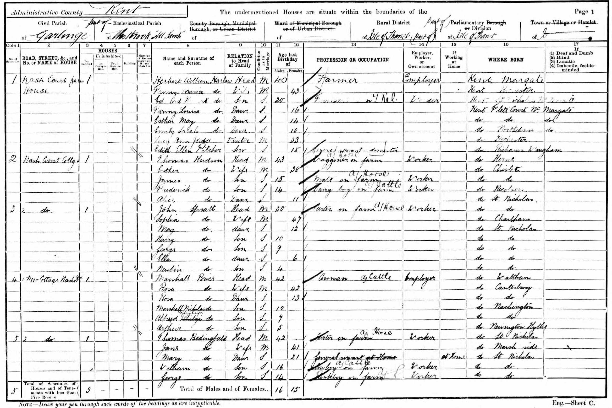

Charles Culmer 1852 - 1915
[ Home ] | [ Calendar ] | [ Surnames Index ] | [ Errors ] | [ Family History ]An agricultural labourer and the child of Charles Culmer (a farm waggoner) and Charlotte Coleman (a pauper), Charles Culmer, the great-great-uncle of Nigel Horne, was born in Monkton, Kent, England on 5 Dec 18521,2,3,4,5,6,7 and married Emma Beak (with whom he had 11 children: Henry Gage, Charlotte Ann, Alfred, Charles, William James, George, Fred, Edith Emily, Edward, Arthur Thomas and Georgina Hannah, along with 1 surviving child) at St Mildred's Church, Preston, Kent, England on 22 Aug 18748 (Jul/Aug/Sep).
During his life, he was living at Monkton Street in Monkton on 7 Apr 18611; on Monkton Parsonage, Monkton Street in Monkton on 2 Apr 187113; at The Square, Stourmouth, Kent on 3 Apr 188112; in Westmarsh, Kent, England on 5 Apr 189110; at 1 Chalk Hole Cottages, Flete, Kent on 31 Mar 19019; and at Newport Cottage, Lydden Farm, Garlinge, Kent on 2 Apr 19115.
He died on 21 Jun 1915 in Thanet, Kent, England7.
Parents
- Charles was born c. 1822
- Charlotte was born c. 1829
Children
- Henry Gage was born in 1873
- Alfred was born in 1877
- Charles was born on 18 Oct 1879
- William James was born on 26 May 1882
- George was born in 1883
- Fred was born in 1889
- Edith Emily was born on 29 Sept 1891
- Edward was born on 23 Jan 1894
- Arthur Thomas was born on 3 Apr 1896
- Georgina Hannah was born on 17 May 1898
Citations
- 1861 England Census Online publication - Provo, UT, USA: The Generations Network, Inc., 2005.Original data - Census Returns of England and Wales, 1861. Kew, Surrey, England: The National Archives of the UK (TNA): Public Record Office (PRO), 1861. Data imaged from the National
- 1881 England Census Online publication - Provo, UT, USA: The Generations Network, Inc., 2004. 1881 British Isles Census Index provided by The Church of Jesus Christ of Latter-day Saints © Copyright 1999 Intellectual Reserve, Inc. All rights reserved. All use is subject to the
- 1891 England Census Online publication - Provo, UT, USA: The Generations Network, Inc., 2005.Original data - Census Returns of England and Wales, 1891. Kew, Surrey, England: The National Archives of the UK (TNA): Public Record Office (PRO), 1891. Data imaged from The National
- 1901 England Census Online publication - Provo, UT, USA: The Generations Network, Inc., 2005.Original data - Census Returns of England and Wales, 1901. Kew, Surrey, England: The National Archives of the UK (TNA): Public Record Office (PRO), 1901. Data imaged from the National
- 1911 England Census Online publication - Provo, UT, USA: Ancestry.com Operations, Inc., 2011.Original data - Census Returns of England and Wales, 1911. Kew, Surrey, England: The National Archives of the UK (TNA), 1911. Data imaged from the National Archives, London, England.
- England & Wales, FreeBMD Birth Index, 1837-1915 Online publication - Provo, UT, USA: The Generations Network, Inc., 2006.Original data - General Register Office. England and Wales Civil Registration Indexes. London, England: General Register Office. © Crown copyright. Published by permission of the Cont
- England & Wales, FreeBMD Death Index: 1837-1915 Online publication - Provo, UT, USA: The Generations Network, Inc., 2006.Original data - General Register Office. England and Wales Civil Registration Indexes. London, England: General Register Office. © Crown copyright. Published by permission of the Cont
- England & Wales Marriages 1837-2005 - Findmypast
- 1901 England, Wales & Scotland Census - Findmypast (was age 48 and the head of the household)
- 1891 England, Wales & Scotland Census - Findmypast (was age 38 and the head of the household)
- 1911 Census for England & Wales - Findmypast (was age 58 and the head of the household)
- 1881 England, Wales & Scotland Census - Findmypast (was age 28 and the head of the household)
- 1871 England, Wales & Scotland Census - Findmypast
Media
1881 UK Census

1891 UK Census

1901 UK Census

1911 UK Census - page 1

1911 UK Census - page 2

England & Wales deaths 1837-2007 Transcription - BMD-D-1915-2-AZ-000223-113
Canterbury Marriages Transcription - GBPRS-CANT-M-97051016-1
1871 England, Wales & Scotland Census Transcription - GBC-1871-0014271343
1881 England, Wales & Scotland Census Transcription - GBC-1881-0004883612
England & Wales births 1837-2006 - BMD/B/1852/4/AH/000853/029
England & Wales marriages 1837-2008 - BMD/M/1874/3/AZ/000063/207
1911 Census for England & Wales - GBC/1911/RG14/04484/0167/1
1891 England, Wales & Scotland Census - GBC-1891-0005918222
Family Tree

Map
Generated by ged2site. Last updated on Jul 3, 2024